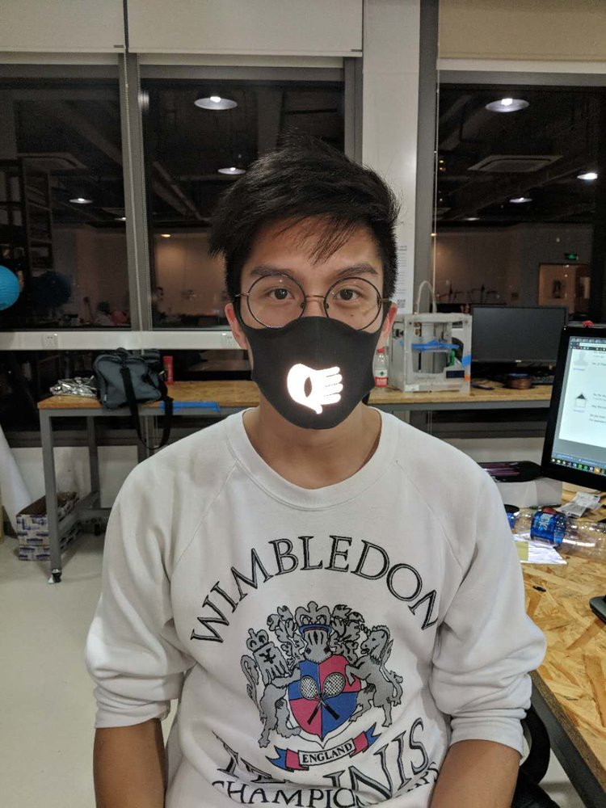

The Anti-Facial Recognition Face Mask is the first iteration of anti-surveillance accessories designed to distort the capture of volumetric video and ensure the safety of an individual's data in a fashionable and trendy way.
The project was inspired by China's Surveillance State 2020 vision: nationwide facial recognition and surveillance network, achieving near-total surveillance of urban residents even within their home through smart TVs and mobile phones. For the same reason, there are 3D data capturing cameras with AI facial recognition technology installed at every metro station in Shanghai. I originally only ace masks thatthought of creating face masks that deter a camera from collecting volumetric data of an individual, but later applied it to other wearable accessories like chokers and earrings, etc. Since I did not want to promote this as an anti-surveillance tools and come under government scrutiny, I came up with some design patterns keeping aesthetics in mind. I tested using different reflective material using a Kinect that uses similar technology of infrared projections for depth sensing. I was able to disrupt the data by using retro-reflective material on the mask, and am now testing it on other different wearable accessories to check the feasibility of anti-surveillance tools as a fashion statement. Unfortunately, Chinese government cameras aren't exactly open source so it is unfeasable to test the face masks against their target cameras, but the effect on the kinect is obvious.
